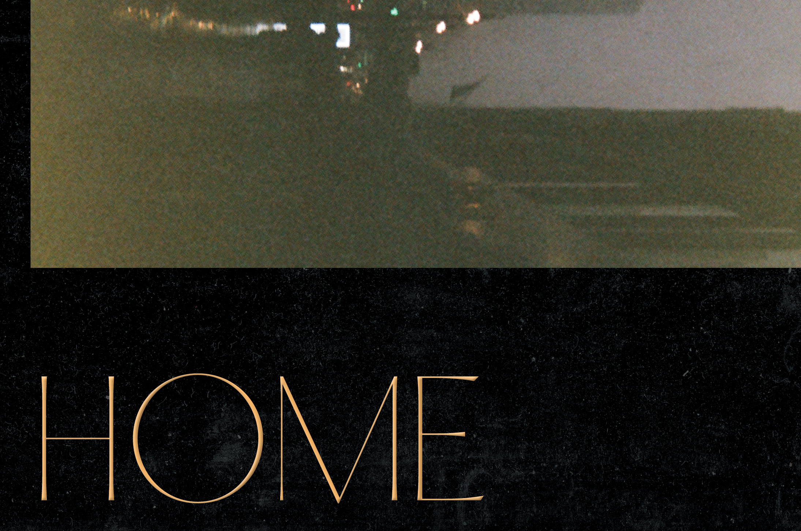

COVID–19 swept the world and disrupted many people's lives, including my dream to live and work in New York. Being forced to move back in with my family in Hong Kong has me questioning the idea of home: Hong Kong is where I grew up, and my home in the most traditional sense; but New York was where I've felt most at home with myself. This pair of posters is my meditation on the different ideas of home, with a bittersweet nostalgia for both: one with faded memories of childhood, and the other of a could-have adulthood.


A poster set of 2